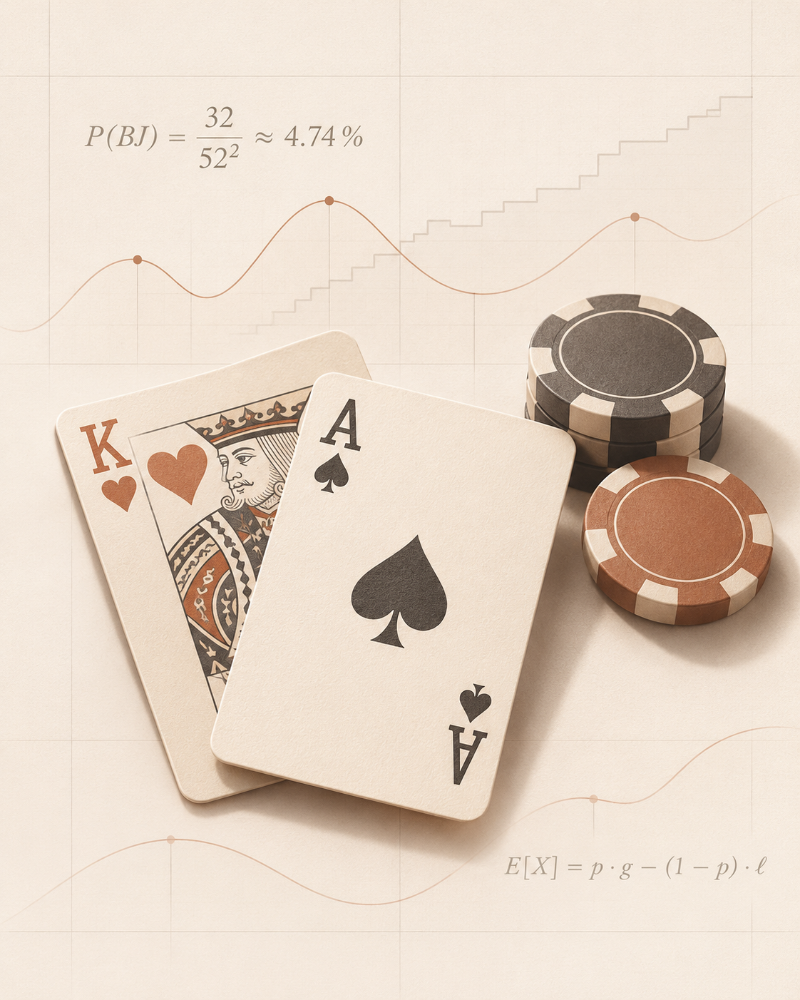

01 / ENSAYO
Ganaste. ¿Pero qué demuestra?
Sobre el blackjack, las rachas de suerte y nuestra facilidad para confundir los resultados con la habilidad.
Leer ensayo ↗Un espacio para ensayos, notas y diarios de investigación.
Sobre el blackjack, las rachas de suerte y nuestra facilidad para confundir los resultados con la habilidad.
Leer ensayo ↗